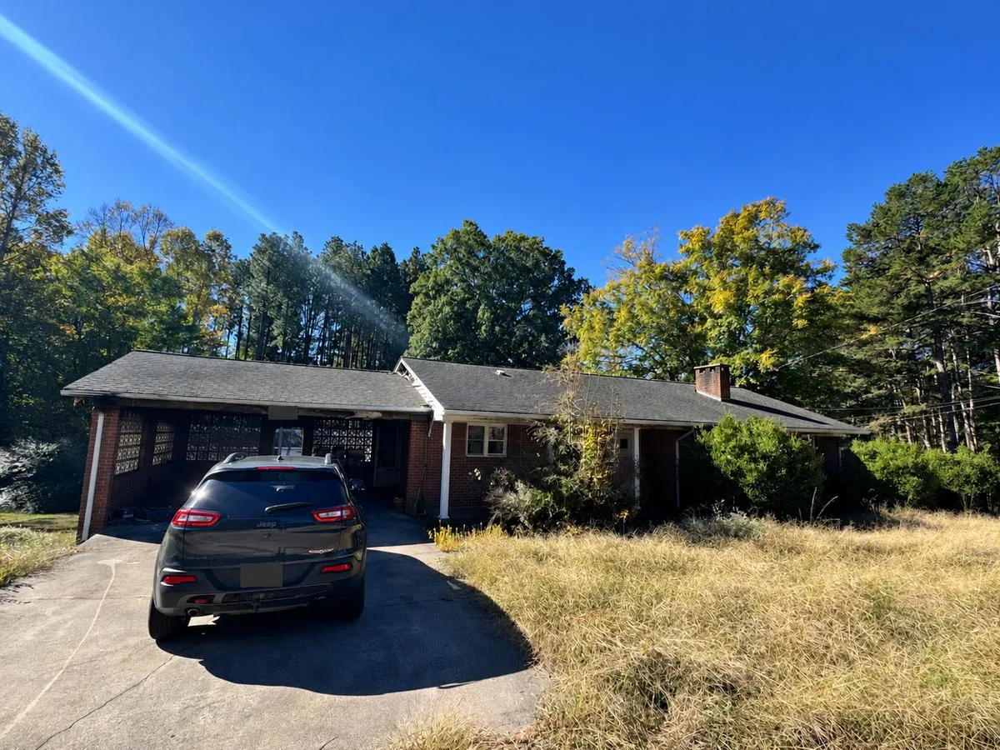

Brick ranch homes
Deferred maintenance outside.
Overgrown grass, shrubs, and years of deferred upkeep can make getting a house ready feel like another job. You can discuss a brick ranch in its current condition before starting the yard work or repairs.